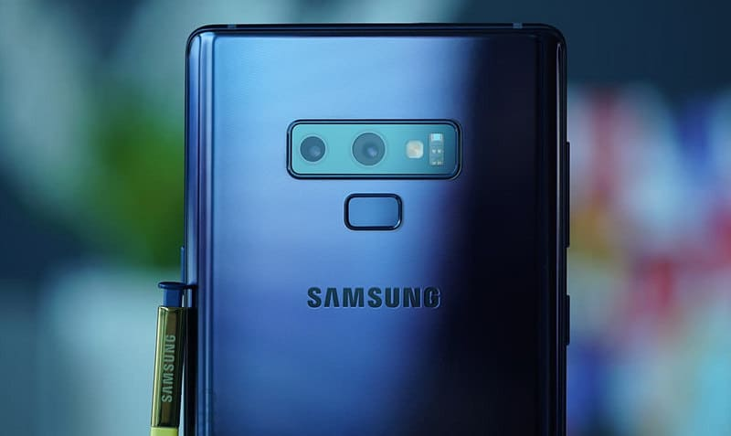

iPhone menggunakan sistem operasi telepon genggam iOS Apple yang dikenal dengan nama "iPhone OS" sampai pertengahan 2010, sesaat setelah peluncuran iPad.Penyu adalah hewan yang banyak di temukan bertelur di beberapa pesisir pantai di Indonesia sejak dahulu.

Samsung adalah salah satu konglomerat (chaebol) Korea Selatan terbesar yang bermula sebagai perusahaan ekspor pada tahun 1938 dan dengan cepat berkembang ke bidang lainnya.
Nokia Corporation adalah produsen peralatan telekomunikasi terbesar di dunia serta merupakan perusahaan terbesar di Finlandia. Kantor pusatnya berada di kota Espoo, Finlandia, dan perusahaan ini paling dikenal lewat produk-produk telepon genggamnya.